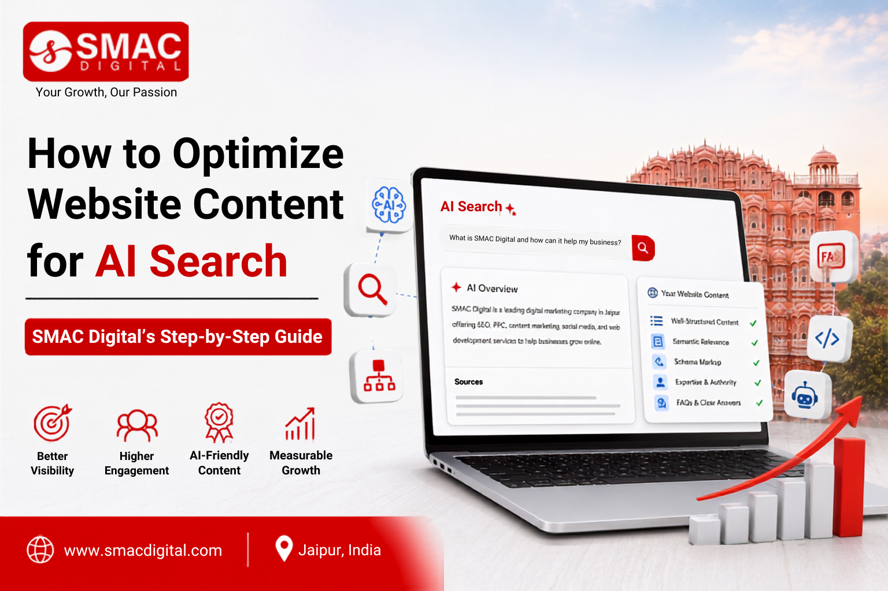

Search is changing rapidly. Users are no longer relying only on traditional Google results; they are increasingly asking AI platforms for direct answers, recommendations, comparisons, and solutions. This shift makes AI SEO services Jaipur an important consideration for businesses that want their content to remain visible across modern search experiences.
At SMAC Digital, we help businesses adapt their SEO strategies to changing search behavior. From traditional search engine optimization to AI search optimization and Answer Engine Optimization (AEO), the goal is to create useful, trustworthy, and easily understandable content that can perform across different search environments.
What Is AI Search Optimization?
AI search optimization is the process of structuring and improving website content so that AI-powered search systems can understand, interpret, and potentially use it when generating answers.
Traditional SEO primarily focuses on improving visibility in search engine result pages. AI search engine optimization, on the other hand, also considers how content can provide clear answers to conversational and contextual queries.
This includes optimizing:
- Website content
- Headings and subheadings
- FAQs
- Structured information
- Entity relationships
- Author and business information
- Helpful, original answers
AI Search vs Traditional SEO: What's the Difference?
Understanding AI search vs traditional SEO is essential for businesses planning their future search strategy.
Traditional SEO focuses heavily on rankings, keywords, backlinks, technical optimization, and search intent. AI search optimization still benefits from these fundamentals but places additional emphasis on clear answers, context, credibility, and content that can be easily understood by AI systems.
The best approach is not to abandon traditional SEO. Instead, combine strong SEO fundamentals with strategies designed for AI-driven search experiences.
Step 1: Understand Your Audience's Questions
The first step in AI search optimization is understanding what your audience actually wants to know.
Instead of targeting only short keywords, identify complete questions and conversational searches.
For example:
- What are the best SEO services in Jaipur?
- How does local SEO help businesses?
- What should I look for in an SEO agency?
- How can AI improve website optimization?
Tools such as Search Console, keyword research platforms, customer conversations, and analytics can help identify these questions.
Step 2: Create Direct and Helpful Answers
AI systems need content that clearly addresses a user's question. Avoid unnecessary introductions when a direct answer can be provided.
For important questions, provide a concise answer first and then expand with supporting details, examples, statistics, or practical recommendations.
For example:
What is AI SEO?
AI SEO is the process of optimizing online content and websites to improve visibility across search engines and AI-powered search experiences.
This format makes information easier for both users and search systems to understand.
Step 3: Structure Your Content Clearly
Content structure matters. Use descriptive H2 and H3 headings, short paragraphs, bullet points, tables where appropriate, and FAQs.
A well-organized page helps users quickly find information while making relationships between topics easier to understand.
For businesses investing in SEO for AI search, every important page should have a clear purpose and logical structure.
Step 4: Strengthen E-E-A-T and Trust
AI search does not eliminate the importance of credibility. Businesses should demonstrate experience, expertise, authority, and trustworthiness.
Strengthen trust by including:
- Author information
- Company details
- Accurate claims
- Reliable references
- Customer reviews
- Case studies
- Original insights
- Updated information
For commercial websites, clearly explaining who provides the service and why customers should trust the business can also improve the overall quality of the page.
Step 5: Use Answer Engine Optimization
Answer engine optimization focuses on creating content that can effectively answer questions in AI-generated and answer-focused search environments.
AEO strategies can include:
- Question-based headings
- Concise answers
- FAQ sections
- Conversational language
- Structured content
- Clear definitions
- Supporting evidence
Businesses looking for AEO services should consider AEO as a complement to SEO rather than a replacement for it.
Step 6: Optimize for Conversational Searches
People often interact with AI tools using natural language. Instead of searching for "SEO Jaipur," someone might ask:
"Which SEO agency in Jaipur can help my business increase organic traffic?"
Your content should naturally address the context behind these longer questions.
This is one way how AI is changing SEO. Search optimization is moving beyond individual keywords toward topics, entities, context, and complete user needs.
Step 7: Consider ChatGPT SEO Ranking Carefully
Many businesses search for ChatGPT SEO ranking, but it is important to understand that there is no simple formula guaranteeing that a website will be mentioned by ChatGPT or another AI platform.
Instead, focus on the fundamentals: accurate information, strong website authority, original content, clear brand information, useful resources, and a technically healthy website.
The objective should be to build a website that deserves to be discovered and referenced—not to chase shortcuts.
Step 8: Monitor and Improve Your Content
AI search is evolving, so optimization should be an ongoing process.
Review your content regularly to identify:
- Outdated information
- Unanswered questions
- Weak sections
- Duplicate content
- Poor internal linking
- Technical issues
- New search trends
Analytics and SEO tools can help you understand which pages attract users and where improvements may be needed.
AI-Powered SEO Services by SMAC Digital
SMAC Digital provides digital marketing and SEO solutions designed to help businesses build stronger online visibility. Its services include SEO, social media marketing, content marketing, inbound marketing, marketing automation, website design and development, video marketing, and digital media planning.
Businesses searching for AI SEO agency support can combine traditional SEO with AI-focused content optimization, AEO, technical SEO, keyword research, and content strategy.
For companies looking for SEO services in Jaipur, SMAC Digital can help develop a customized strategy based on business goals, audience needs, competition, and changing search behavior.
Why Choose an AI SEO Agency?
The future of search requires more than simply adding keywords to webpages. Businesses need content strategies that understand users, answer questions clearly, demonstrate expertise, and provide genuine value.
A professional AI SEO agency can help businesses adapt their existing SEO foundation for emerging AI-powered search experiences while continuing to target traditional organic search.
Final Thoughts
AI is changing how people discover information, products, and businesses online. However, the fundamentals remain strong: create useful content, understand your audience, demonstrate expertise, maintain technical quality, and provide clear answers.
By combining traditional SEO with SEO for AI search, businesses can prepare for a search landscape where Google, AI assistants, and answer engines increasingly influence how users discover information.
If you're looking for AI SEO services Jaipur, SMAC Digital can help your business develop a modern search strategy focused on visibility, relevance, authority, and sustainable growth.
Frequently Asked Questions
1. What are AI SEO services in Jaipur?
AI SEO services focus on optimizing websites for traditional search engines as well as AI-powered search and answer experiences.
2. What is the difference between AI search and traditional SEO?
Traditional SEO focuses primarily on search rankings, while AI search optimization also focuses on conversational answers, context, entities, and content clarity.
3. What is Answer Engine Optimization (AEO)?
AEO is the practice of structuring content to provide clear, useful answers for answer engines and AI-powered search experiences.
4. Can SEO help with ChatGPT visibility?
Strong SEO fundamentals, authoritative content, clear brand information, and trustworthy resources can improve discoverability, but no strategy can guarantee ChatGPT mentions.
5. Why is AI changing SEO?
AI is changing how users search and consume information, making conversational queries, direct answers, context, and content quality increasingly important.
6. Does traditional SEO still matter for AI search?
Yes. Technical SEO, quality content, authority, crawlability, and search relevance remain important foundations for modern AI search optimization.
7. Does SMAC Digital provide AI SEO services?
SMAC Digital provides SEO and digital marketing solutions that can help businesses adapt their content and search strategies to evolving AI-powered search
Next step
Ready to put this into practice? Let’s talk growth.
SMAC Digital helps brands turn strategy into pipeline — SEO, social, content, and performance under one roof.